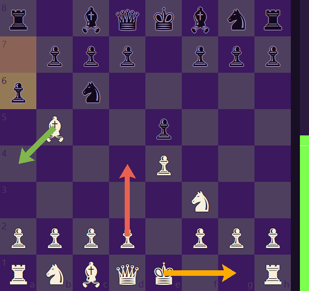
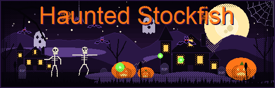
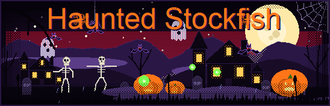

Candidate moves
Compare up to three ideas
See the top lines as green, amber, and coral arrows—or switch to square highlights. Reveal them instantly, after a delay, or step by step.
Made for online chess practice
Optimize your practice sessions, analyze master games, and improve your endgame strategy. For competitive players, our tool also helps identify human opponents' patterns and weaknesses.

A toolkit for your next practice session
Choose how Stockfish thinks, see why a move matters, save the game, and tune the interface to fit your study style.
Candidate moves
See the top lines as green, amber, and coral arrows—or switch to square highlights. Reveal them instantly, after a delay, or step by step.
Voice choices
Hear suggested moves and spoken callouts for checks, captures, castling, and checkmate. Adjust persona, speed, and volume; optional neural voices need an internet connection.
Engine controls
Choose an Elo target or Stockfish skill level, then tune thinking time and maximum search depth for each position.
Move explanations
Optionally grade opponent moves as Brilliant, Best, Excellent, Good, Inaccuracy, Mistake, or Blunder. Hear short callouts, then use the Explain shortcut to hear why a move was strong or missed something.
Optional auto-move
Auto-move starts off. Explore suggestions yourself, enable it for supported matches, set its pace, or play a single suggestion on demand.
Crystal Ball board
Track the board, candidate lines, last move, and evaluation bar. Optional loose-piece markers and several board palettes add more context.
Game record
The Spirit Log records suggested moves, evaluations, and move grades. Copy the game as PGN, save a .pgn file, or copy the current position as FEN for later review.
Signature atmosphere
Watch the fear meter, storm glow, lightning, bats, and rain respond to the position. Choose other app color themes and background effects, too.
Shortcuts and presets
Use Learner, Showcase, or Lightweight presets, then tune hotkeys, opacity, compact view, and fullscreen cockpit to fit your setup.
…and many more.
Tech specs
Get up and running in under 2 minutes with zero complex configuration.
Windows 10 or Windows 11 (64-bit desktop environment).
Google Chrome desktop for seamless web assistant integration on Chess.com.
Instant installation package with pre-configured Stockfish engine and voice modules.
From the actual app
See the real dashboard and settings, plus source-rendered previews of the Crystal Ball board and animated Haunted scene.


POSITION AT A GLANCE
The Crystal Ball view tracks a position, colors candidate moves, marks the last move, and shows the evaluation bar. It can also display recognized opening names and engine-match stats; fullscreen adds a larger board and move history.

Interface screenshots supplied by the developer. The Haunted scene previews below are rendered from the app’s drawing code.
DRAWN INSIDE THE APP
The banner is drawn by Haunted Stockfish itself. Its atmosphere responds to the assistant’s fear state, from a quiet graveyard to a storm-lit scene.


Simple to start
Haunted Stockfish is a Windows desktop app currently set up for Chess.com matches in Chrome. Explore suggestions during live play, then save the game to review it later.
Open a game on Chess.com in Chrome, then connect the assistant to your browser.
Choose Elo or skill, thinking time, arrows or highlights, voice callouts, and whether to enable auto-move.
Review grades and explanations, then copy or save the game as PGN.
See it in action
Watch the assistant’s setup, move display, voice, engine controls, and live match workflow.
site-config.js.
Walkthrough
A clear screen recording can show the app in a real match and explain what each setting changes.
Keep the demonstration focused on live matches and post-game learning.
Pick your practice plan
Every plan unlocks the same app features. Compare move lines, tune engine settings, hear explanations, and save PGNs; only the access period changes.
7-Day Pass
One-time payment · no renewal
1-Month Pass
One-time payment · 1 month of access
Lifetime
One-time payment · lifetime access
Same feature set on every plan: candidate lines, voice feedback, engine controls, the Crystal Ball board, and PGN review.
Download the app below, then press “Buy a license” inside it. Your key is made for your PC automatically.
Intended-use & Liability notice
Our software is designed for educational purposes and personal skill improvement. While undetectable, all users are responsible for ensuring compliance with platform rules. Haunted Stockfish is not liable for penalties resulting from misuse of its features in competitive settings where external assistance is banned. If you choose to use this software against online human players, Haunted Stockfish is not responsible for any account bans or suspensions resulting from its use. Need setup help? Our support team assists all customers with configuration within 24 hours.
Download the app
The Haunted Stockfish dashboard is the Windows app that holds your license and opens the chess assistant. Install it first, then buy your key from inside the app so it is locked to your PC automatically.
Run the installer, then open the Haunted Stockfish dashboard. It starts locked and shows your PC's hardware ID.
Pick 1 week, 1 month, or lifetime. The app opens secure checkout with your hardware ID filled in, so your key is made for your PC.
After payment you will see your key (it starts with HS-). Copy it, paste it into the dashboard, and press Activate to unlock the app.
A few details
It is a Windows chess assistant set up for Chess.com matches in Chrome and for reviewing completed games against both humans and computers.
Yes, Haunted Stockfish supports matches against both humans and computers on Chess.com. While undetectable, you are responsible for following platform rules, and Haunted Stockfish is not responsible for account bans or suspensions resulting from its use.
A Windows computer (10/11) and Google Chrome are required. Setup takes under 2 minutes.
The example 7-day and one-month plans are one-time purchases, with no automatic renewal. The lifetime plan is also a one-time purchase.
Use the bug and feature request form below. For setup assistance, our support team responds within 24 hours.
Help shape what comes next
Send a report or feature request with enough detail to make it useful. For bugs, include what you expected, what happened, and the steps that reproduce it.
Choose your plan and get started